光動能
光動能
無論在任何地方，腕錶永不停止。
讓腕錶在全球任何地方都可以時刻保持運轉，
為佩戴者提供更方便的時間體驗。
1976年，CITIZEN發明了全球首款以光作為能源驅動運作的腕錶，
“光動能（Eco-Drive）”技術也由此誕生。
光動能，通過運用人造光源，自然光源（甚至是微弱的光源）
為手錶提供運作所需的動力，而且毋需更換電池。
此後，作為這全新領域的開創者，CITIZEN並未停止創新，
且開始不斷自我挑戰，發掘光動能技術的潛能。
讓腕錶在全球任何地方都可以時刻保持運轉，
為佩戴者提供更方便的時間體驗。
1976年，CITIZEN發明了全球首款以光作為能源驅動
運作的腕錶，“光動能（Eco-Drive）”技術也由此誕生。
光動能，通過運用人造光源，自然光源
（甚至是微弱的光源）為手錶提供運作所需的動力，
而且毋需更換電池。
此後，作為這全新領域的開創者，
CITIZEN並未停止創新，
且開始不斷自我挑戰，發掘光動能技術的潛能。

CITIZEN的光動能技術因其環保貢獻在日本和其他國家均贏得廣泛好評。1996年，光動能腕錶成為通過日本環境協會 (JEA)“生態標誌”認證的首款腕錶。2014年，CITIZEN更成為榮獲日本環境協會“生態標誌獎”金獎的首家鐘錶企業。

光動能的特性
用光驅動腕錶持續運轉
光動能技術可以通過吸收任何自然光或人造光源轉化為電能，為腕錶的運作提供持久動力。光動能腕錶毋需更換電池，在日常佩戴中亦能輕鬆地充電，保持腕錶的持續運行。

微弱光源也可進行充電
通過光動能技術，任何可見光源（即使是微弱光源）都可為腕錶的運作提供能量。
光是光動能腕錶運作的唯一能量來源。
黑暗中依然保持運行
CITIZEN的光動能技術可以讓腕錶保持運行，除了對光的有效運用外，還因其擁有強大的“生命力”。
光動能腕錶在充滿電的狀態下，可以在完全黑暗環境中，持續運行六個月以上。
啟動省電功能後，CITIZEN光動能腕錶更可在黑暗環境下持續運行長達七年以上。
技術
光能驅動
光動能技術可將任何可見光源（包括人造光、自然光，甚至微弱光線）高效地轉化為動能驅動腕錶運作。而為了讓腕錶的設計有更多的選擇，CITIZEN研發出兩種類型的光動能電池。
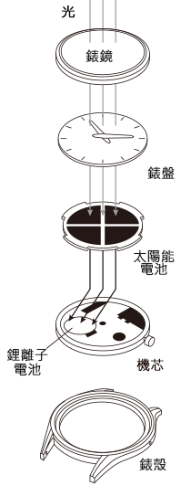
標準光動能
這是目前CITIZEN腕錶中最常用的光動能電池。它置於錶盤底部，能夠高效地將光源轉化為電能。
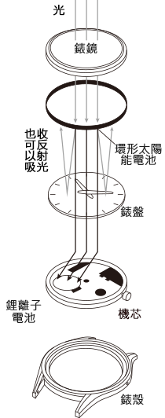
環形光動能
通過環繞錶圈內側的吸光裝置來吸收任何可見光源轉化為動能以驅動腕錶運作。因為毋需設置透明錶盤來滿足吸光需求，所以也令錶盤的設計有更大的彈性。
節能
CITIZEN一直致力於提昇腕錶的省電性能，並努力不懈地追求創新，向市場推出更多具有先進功能和出色設計的光動能腕錶。
電量不足警告
光動能腕錶電池能量不足時，秒針將每兩秒移動一次，這就是電量不足警告顯示。當電池充滿電後，秒針即恢復正常運行。
省電功能
具有省電功能的腕錶置於黑暗環境後，錶針將停止運轉以節約電能。當腕錶再次接觸到光源後，錶針將快速自動移動至當前正常時間。
.png)
∗
腕錶功能因不同型號而異。
感光亮度等級指示
CITIZEN發明了全球第一項針對光動能技術的 ∗ 感光亮度等級指示功能。它可以偵測到透過錶盤的光強度並顯示其等級，佩戴者可隨時輕鬆掌握充電情況。
∗
根據CITIZEN WATCH CO., LTD.研究數據

故事
未來能源
七十年代中期的能源危機是CITIZEN開始研究可持續能源的原因之一。時代的社會環境引領我們研發出藉著光能運行的“光動能腕錶”。
在1970年期間，以電池供電的石英錶已經成為日本鐘錶市場的主流趨勢，成為當時最受歡迎的腕錶。與此同時，CITIZEN也注意到石英錶的一些潛在問題，例如電池使用壽命有限，需要更換電池，以及一次性電池對環境造成的影響。
第一款光動能腕錶
早期的太陽能電池對腕錶來說過於笨重並且易碎。如何減少電池尺寸，成為CITIZEN在研發過程中面對的第一個挑戰。
1974年，CITIZEN完成了首個光能供電的腕錶原型，將圓形的太陽能電池嵌入錶盤底部。兩年之後，也就是1976年，CITIZEN推出了全球第一款光動能腕錶 Crystron Solar Cell。
-
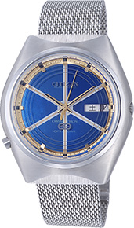
1974
-

1976
持久運行的腕錶
Crystron Solar Cell面世後，太陽能電池和儲存剩餘電量的蓄電池在電容量上有著限制，跟隨時隨地持續運轉還有很多技術上的難題需要克服。
在八十年代，許多行業對蓄電池的需求不斷增加，通過光供電的產品越來越多，這也促使CITIZEN的工程師們不斷提昇既有的技術，進一步改進光動能腕錶。經過一段時間的艱苦研發之後，CITIZEN推出了全球第一款充滿電後能運行長達200小時的腕錶。
此後，CITIZEN持續不斷的改進光動能腕錶的性能，更薄的腕錶、可利用室內照明進行充電的腕錶、以及更有彈性的雙層電容器都是CITIZEN努力的成果。
1995年，CITIZEN使用了能夠增加儲電量的鋰離子電池，突破了光動能腕錶，充滿電後能運行六個月以上。
-

1986
光動能
CITIZEN以光作為腕錶能源驅動的技術被稱為“光動能”(Eco-Drive)。這不僅代表CITIZEN卓越的技術成就，也體現了CITIZEN對自然環境的關切。最重要的是，這個名稱和標誌代表了CITIZEN是一個致力為全世界人們服務的品牌。

永無止境的挑戰
在“Better Starts Now”品牌理念的指引下，CITIZEN創造了多項“世界第一”。至今，我們依然致力於開發具有更多功能，更好質量以及更為精緻的光動能腕錶，讓全世界顧客可以體驗更多的佩戴樂趣。
-
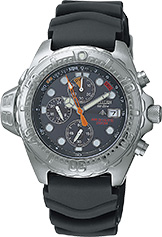
1998
全球首款
光動能潛水錶 -

2010
全球最薄 ∗
光動能電波時計
∗2010年發佈厚度4.9毫米
-
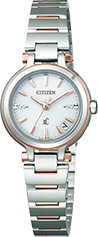
2011
全球最細 ∗
光動能電波時計
∗2010年發佈直徑24.5毫米 -

2012
從錶殼側吸光的
光動能腕錶
-

2013
全球首款具有藍芽功能的
光動能腕錶
註：部分產品已停產或不在某些市場銷售

超級鈦TM

Special Movie
超級鈦TM
耐磨損，佩戴更為舒適的質料
1970年，CITIZEN推出全球首款重量輕、防過敏、抗鏽蝕的鈦合金腕錶。
通過CITIZEN專有的Duratect表面硬化技術，我們創造出更堅固耐用的超級鈦TM。
超級鈦TM 比不鏽鋼堅硬五倍以上，佩戴的舒適度也更佳。
超級鈦TM 的誕生也代表著CITIZEN致力於為人們帶來更好生活品質的一貫追求。
超級鈦TM的特性
更堅固、更耐磨損
讓您的腕錶不受磨損並且保持亮麗，這不代表您必須把它藏在檯內。超級鈦TM為美麗與保存之間的難題提供了完美的解決方案。
因為CITIZEN獨有的Duratect表面硬化技術 ，超級鈦TM 避免了腕錶在日常佩戴中的磨損問題。
超級鈦TM比不鏽鋼
堅硬5倍以上
-
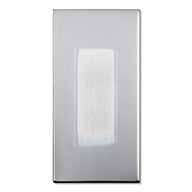
不鏽鋼
-
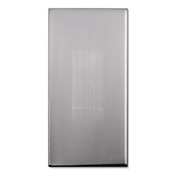
超級鈦TM(Duratect TIC)
CITIZEN WATCH CO., LTD.進行的劃痕對比試驗
註：相同體積的不鏽鋼板和超級鈦TM 板經受五次同等壓力的刮擦。
更輕，更舒適
超級鈦TM比不鏽鋼輕約40%。
如此輕巧，讓您忘記自己正戴着手錶。
無論做什麼，您都可以更為舒適的欣賞腕上的手錶。
超級鈦TM比不鏽鋼
輕約40%
-
不鏽鋼
-
超級鈦TM

註：比較相同錶款，一款是不鏽鋼質料，另一款是超級鈦TM質料。
一種更柔和的親膚性金屬
低致敏的鈦金屬結合CITIZEN獨有的表面硬化技術而誕生的超級鈦TM可以進一步降低人體對金屬不良反應的風險。 即使敏感肌膚的人也不必擔心佩戴超級鈦TM 腕錶會刺激皮膚。
註：
超級鈦TM不預防全部金屬過敏反應。
更耐腐蝕性，成就恆久之美
超級鈦TM更耐腐蝕性，包括接觸海水時。
它陪著你走遍天涯，歷經萬千，卻依然能確保始終亮麗如新。
∗
用於錶帶的別針可能變暗。CITIZEN建議定期清洗。
技術
技術
鈦是地球上儲量排第四位的結構金屬。它是一種對陽光、海水或人體都不產生化學反應的神奇質料，可以減少潛在的金屬過敏反應並且更耐腐蝕性。
衝壓
鈦是一種活性金屬，易與氧、碳、氮等元素發生反應。當製造時，鈦原子容易粘附在衝壓所用的金屬模具上並會熔入模具，難以成形。為了防止黏合，我們改變了鈦的特性；在衝壓前進行高溫加熱，減少其抗塑性。這一發現讓鈦具備了更多的衝壓可能性。
切割
由於鈦易與空氣中的氧氣發生反應，所以鈦銼屑會黏住鑽頭並在鑽孔時形成摩擦。這將導致鑽孔厚度減少，切割孔不準確。通過嚴格地反覆試驗多種冷卻油、潤滑油和不同程度的切割速度，CITIZEN改良了鈦的傳統切割技術。

拋光
當在腕錶中使用鈦時，拋光是另一個挑戰。因形成鈦的晶粒發生硬度微變，常規拋光流程會出現表面參差不齊的情況，損害腕錶光澤。CITIZEN結合了多種拋光技術（包括滾筒拋光和 Sallaz 鏡面拋光），為超級鈦TM腕錶實現更佳表面品質。

表面硬化技術： Duratect
為了使腕錶質料可以更為堅固，CITIZEN開發了Duratect表面硬化技術。

進行Duratect處理的儀器
CITIZEN擁有多種表面硬化技術。
在實現不同程度的硬度（可達相當於不鏽鋼的硬度五倍以上）的同時，還可進行金屬著色：銀色、黑色、金色都可實現。
 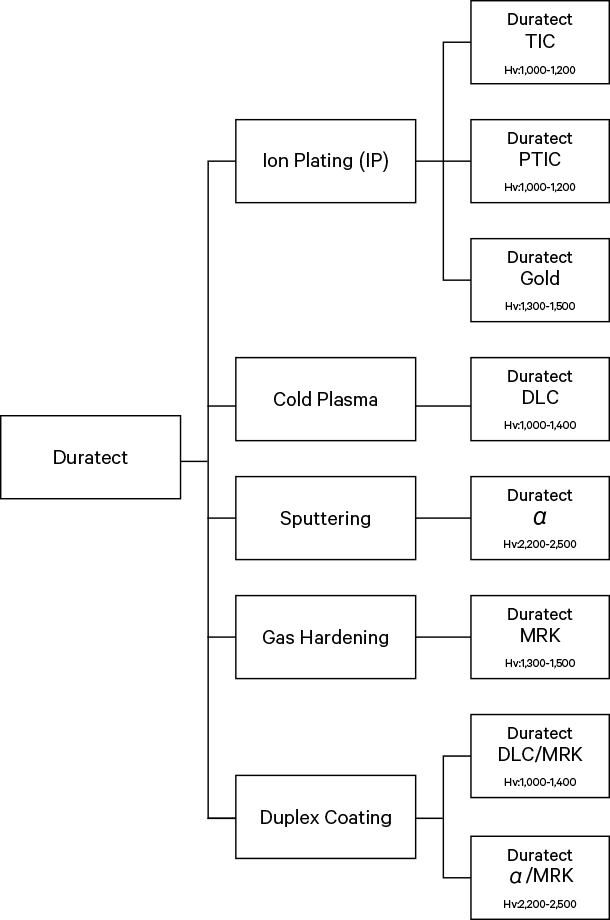
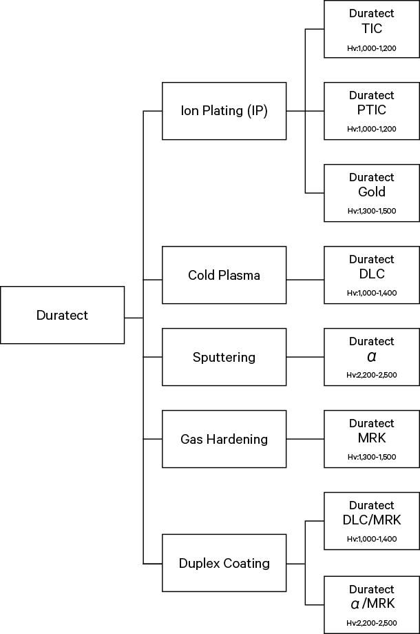
維氏硬度
維氏硬度是一種以鑽石顆粒壓入質料表面測量硬度的方法，適用於硬度較大的各種質料。這種硬度測試僅用於測量質料表面硬度，不能作為抗磨損的標準。
CITIZEN Duratect表面硬化技術的
硬度變化
超級鈦TM錶殼呈現的不同顏色

Duratect Surface Hardening Technologies
IP
This technology, which includes ionizing and coating the metal surface, makes possible diverse color variations, such as silver and pink gold.

Duratect TIC (HV1,000-1,200)
IP technology is used to harden the surface by coating it with a hard membrane for mirror and hairline finishes.


Duratect PTIC (Hv1,000-1,200)
Duratect TIC is further coated with platinum, a noble metal. Thickness can be controlled in this way without sacrificing hardness to achieve the exquisite color of platinum and color tones comparable to stainless steel.

Duratect GOLD (Hv1,300-1,500)
CITIZEN's original IP technology is used to coat titanium nitride film with gold and an alloy compound. The result is a beautiful gold hue unattainable with previous technologies.

Low-Temperature Plasma
This technology involves the plasmafication of gases containing raw materials for coating on the metal surface. Duratect DLC has a diamond-like amorphous structure for a very hard and smooth coating that gives a distinctively luxurious dark gray hue to treated surfaces.
Duratect DLC (Hv1,000-1,400)
DLC (Diamond Like Carbon) is a coating technology using a hard amorphous carbon film made up mainly of carbon and hydrogen. The result is a bold dark gray color.
Sputtering
Argon ions are bombarded onto the target metal with this technology. The atoms deposited are then used to coat metallic surfaces. In addition to achieving about twice the surface hardening of conventional technologies, this technique results in excellent hypoallergenic properties.
Duratect α (Hv2,000-2,500)
This is CITIZEN's ultimate new surface hardening technology, offering twice the hardness of Duratect TIC/PTIC. Coating materials that contain no noble metals results in high scratch resistance and gentleness on the wearer’s skin.

Gas Curing
Nitrogen and oxygen injected into a vacuum furnace are processed using heat to form a hard layer 20 μm to 30 μm thick.This technology can be used to produce surfaces resistant to scratching even under harsh usage conditions.

Duratect MRK (Hv1,300-1,500)
The titanium surface is hardened by coating it with a material infiltrated by nitrogen and oxygen for a mirror finish that is highly resistant to scratches.

Composite Curing
This technology represents a combination of gas curing technology with low-temperature plasma or sputtering technology. Overlapping the hardened layer with a hard coating further improves overall material hardness and hypoallergenic properties.

Duratect MRK/DLC (Hv1,000-1,400)
Duratect DLC hard amorphous carbon film is applied to Duratect MRK surfaces made with gas curing.
Duratect MRK/α (Hv2,200-2,500)
Titanium materials with Duratect MRK surfaces are coated with Duratect α, the ultimate surface hardening technology in CITIZEN's Duratect lineup.

故事
為腕錶尋找理想質料
超級鈦TM技術可追溯到二十世紀六十年代。阿波羅登月計劃展現了鈦作為工業材料的潛力。受此啟發，CITIZEN的工程師開始探索在腕錶製造中加入鈦的可能性。
第一款鈦合金質料腕錶
1970年，CITIZEN推出全球首款鈦金屬錶殼的腕錶，並命名為“X-8 Chronometer”，它的誕生象徵著鈦質料在腕錶應用領域的無限可能，CITIZEN並對此有著更高的期待。
-

1970
鈦質腕錶適合任何人士佩戴
CITIZEN更為重視鈦的低致敏性，並將創造安全溫和的新款腕錶作為公司使命，希望每個人都可以佩戴舒適的腕錶。
1987年，CITIZEN推出了全鈦製低致敏腕錶“Attesa”。
-

1987
CITIZEN獨創的超級鈦TM
CITIZEN致力於開發鈦金屬作為手錶材料的無限可能，但這並不容易。挑戰來自於需要自主研發鈦金屬的加工技術及表面硬化技術 (Duratect)。
而挑戰還不止于此!
在"更好的『開始』就是『現在』"的理念下，我們尋求未來更大的突破。
我們通過優化鈦的加工技術，成功地設計出具更高耐磨損、顏色更豐富和更低致敏性的錶款。
我們始終致力於讓任何人，在任何地方都可有機會佩戴設計漂亮且高舒適度的腕錶。正是這美好的願景驅使著CITIZEN團隊研發出了超級鈦TM -- 至今這種信念仍然激勵著我們，無懼未來任何挑戰開發出更好的腕錶。
-
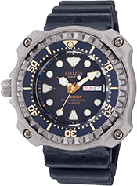
1982
當時全球最大抗壓鈦金屬手錶，
防水達1300米。
∗根據1982年資料 -

1993
全鈦製造的低致敏金屬腕錶
-
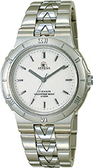
1994
鉑鍍膜鈦金屬腕錶
-

2000
經表面硬化技術處理的
鈦金屬腕錶
-

2006
經 Duratect MRK＋Duratect DLC
處理的鈦金屬腕錶。
註：部分產品已停產或不在某些市場銷售
衛星對時和電波時計
衛星對時
無論身在何處，時刻掌控精準時間
2011年，CITIZEN率先發明了一種通過衛星對時的領先技術“Satellite Wave”，
使腕錶可以接收GPS導航衛星發射的標準時間信號，
在世界任何地方都能顯示精確的時間和日期。
結合CITIZEN獨有的光動能技術，CITIZEN衛星對時腕錶毋需更換電池，
也不需要通過轉動錶冠等複雜的操作來設置時間。
為佩戴者提供最精確的時間。
2011年，CITIZEN率先發明了一種
通過衛星對時的領先技術“Satellite Wave”，
使腕錶可以接收GPS導航衛星發射的標準時間信號，
在世界任何地方都能顯示精確的時間和日期。
結合CITIZEN獨有的光動能技術，
CITIZEN衛星對時腕錶毋需更換電池，
也不需要通過轉動錶冠等複雜的操作來設置時間。
衛星對時的特性
世界任何地方都可顯示精準時間
衛星對時腕錶可覆蓋現有UTC的全部40個時區，確保腕錶提供最精確的時間。無論是徒步沙漠、巡游大海，或是攀登雪山，永遠毋需擔心，精準時間盡在掌控。
∗每個型號覆蓋的時區不同
覆蓋 40 個時區

∗
時區圖，按照每個國家或地區的具體情況，實際時間可能不同。
無論身處何地，時間都與您同步
想像您正在駕駛橫越廣闊的大陸，每當您離開一個時區進入另一個時區時，時間就會跟隨著改變。無論你走到哪裡，衛星電波都會連接GPS衛星獲取位置數據和時間信號。無論你當時身處何地，它都可利用這些資料自動計算您所在的時區和同步調整您的手錶至正確的時間。
∗
有些型號只可接收時間信號。
∗
獲取位置數據需要最少30秒。切換至夏令時間需要手動調整設定。
3 秒全球最快∗衛星信號接收速度
衛星對時技術突破了衛星信號接收速度，調整時區更為輕鬆。僅需三秒即可完成衛星信號接收，為全球最快的GPS 衛星信號接收速度。
∗
截至 2015 年 5 月，以光動能GPS衛星對時腕錶為基準（CITIZEN WATCH CO., LTD.的研究數據）

技術
衛星對時系統
通過接收距離地球2萬公里的GPS導航衛星發射的標準時間信號，衛星對時系統可以讓腕錶時刻顯示正確的時間和日期。
-
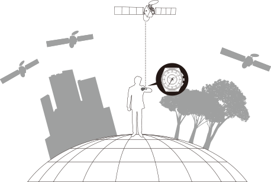
［獨特的運算程式］
CITIZEN在保持腕錶精準計時的同時，也十分注重腕錶的易用性。通過獨特的運算程式，CITIZEN的衛星對時技術成為全球接收 GPS衛星數據最快的技術*，僅需三秒。相對於2011年時發佈的錶款，校時速度提昇了一倍。這全賴我們努力不懈地追求創新和改進。
＊
截至 2015 年 5 月，以光動能GPS衛星對時腕錶為基準（CITIZEN WATCH CO., LTD.的研究數據）
［高速運轉的指針］
我們的腕錶採用了最新研發的高速馬達，可以使指針更快速的運轉。
CITIZEN在這一技術領域的努力革新，使衛星對時腕錶能讓佩戴者更迅捷的獲取正確的時間與日期。
故事
精準隨行，每時每刻
我們的目標是，無論人們在世界上任何地方生活和工作，都可以為他們提供正確時間，這也是驅使我們研發衛星對時技術的初衷。在研發之初，還沒有專門為腕錶顯示正確時間而設計的GPS機芯。但是我們無所畏懼，以勇於挑戰的信念開創了衛星對時領域的技術先河，成功地開啟腕錶未來之門。
全球首款通過GPS衛星對時的光動能腕錶
2011年發佈全球首款衛星對時腕錶Eco-Drive SATELLITE WAVE，這是CITIZEN工程師們艱苦努力的科技結晶。它時尚且充滿未來感的錶殼和錶盤設計，代表了地球和外太空的完美融合。
-

2011
從挑戰速度到未來
我們堅信，腕錶對於佩戴者來說真正的價值是可以快速地獲取最準確的時間。在這目標的驅動下，我們不斷突破技術限制。在發佈了首款光動能衛星對時腕錶三年之後，我們隆重推出光動能衛星對時腕錶F100。將腕錶接收衛星信號的時間由6秒縮短了一半，變為業界領先的3秒*。
我們不僅改善了接收速度，還研發了更節能、更緊湊的全球定位系統 (GPS) 機芯與可快速移動錶針的高速馬達，腕錶尺寸亦更加輕薄，設計更為時尚。但是，我們深知我們還未達到目標，我們會繼續突破創新，打破未來技術的極致。
∗
截至 2015 年 5 月，根據CITIZEN WATCH CO., LTD.的研究數據
-

2014
GPS功能的提昇
在2015年，CITIZEN研發了一枚不僅接收時間信號，亦可獲取位置數據的新腕錶型號。這就是光動能衛星對時腕錶F900，這枚多功能光動能GPS衛星對時腕錶在BASEL WORLD 2015首度發表。其推進速度的概念及追求超薄的設計，更令GPS的功能發揮得淋漓盡致。雙線圈馬達使錶針正向和反向旋轉更為迅速，無論您在任何地方都能非常快速地獲取精確的時間。這亦是全球最薄的GPS衛星對時腕錶.* CITIZEN不停地追求更快及更精確的時計。我們的探索是永遠不會停止的。
∗
截至 2015 年 5 月，根據CITIZEN WATCH CO., LTD.的研究數據
-
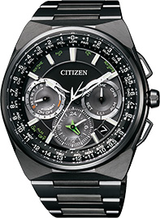
2015
註：部分產品已停產或不在某些市場銷售
電波技術
恆久的精確計時
1993年，我們推出了世界第一款可接收多局電波的腕錶，
並持續成為這個領域的領跑者。
電波時計融合了CITIZEN獨有的光動能技術，
通過吸收任何可見光源轉化為電能帶動手錶持續運轉，隨時隨地獲得精準時間。
特性
十萬年僅誤差1 秒
CITIZEN的光動能電波時計，通過接收電波塔發出的標準時間電波信號，獲取時刻和日期等數據，自動校正手錶的時間和日期。標準時間電波採用高精度銫原子鐘的理論，十萬年僅誤差一秒。
自動且便利
為了避免在日常繁忙工作中還要校對時間的繁瑣，以及對智能手機或其他電子設備的無線電波的影響，我們的電波時計會在深夜自動接收電波信號調整時間和日期。
技術
信號接收
由時間、日期等數據組成的信息將以電波信號的形式直接發送到電波時計中，這些數據來源於高精度原子鐘，十萬年只有1秒的誤差。
電波覆蓋的四大區域
目前可接收電波信號的地理區域包括日本、中國、北美和歐洲。
註:
1.
地圖上標示的可用區域基於粗略計算，不代表準確地域可用性。
2.
接收範圍因每款腕錶的功能而異。
3.
建築物、其他障礙，以及不利的天氣狀況都可能影響信號的接收。
故事
為了更精準的時間
1989年，鐘錶製造商都在追求高精度手錶的情況下，CITIZEN開始投入研發電波技術。我們是第一家面對這一挑戰的日本鐘錶製造商，為此我們要克服無數障礙，從創造發展這項技術的設備，到放置在實驗室窗台上用以評估信號接收性能的測量工具，都需要我們去摸索創造。在研發團隊辛勤的努力下，CITIZEN成功研製出日本第一枚電波信號接收集成電路。
全球首款多局電波時計
CITIZEN克服重重技術障礙，於1993年推出全球首款多局電波時計。天線是信號接收靈敏度的核心，易受金屬錶殼和零件干擾，這也是我們把它放置在錶盤中央的原因。最終，這種獨具匠心的大膽設計，確保了我們在信號接收時的準確性。
-

1993
技術與美的完美融合
在其後的數年間，CITIZEN通過技術的改良，
使信號接收天線可以更佳地與腕錶設計融合在一起，
並能同時保持接收信號的精準性。
我們先後用樹脂、陶瓷等材料作為錶殼的材料，
在提昇腕錶外觀的同時也加強了信號接收的強度。
我們希望可以實現全金屬錶殼的電波時計。
不久之後，藉著更優良的天線和接收器電路，
我們在2003年終於將曾經“不可能”的願望變為現實，
推出了全金屬錶殼（包含後蓋）的電波時計。腕錶一上市便大受歡迎，也提高了對電波時計的認知。
-

2003
縮小外形、提昇性能
從2003年推出首款全金屬錶殼腕錶之後，
電波時計逐步成為CITIZEN的核心產品。
我們持續不斷改善現有工藝，開發更先進的技術，
在無損性能的情況下讓天線變得更小，創造更小且更薄的電波時計。
雖然我們已經取得了矚目的成就，但我們相信前面依然有無限的可能性。
註：部分產品已停產或不在某些市場銷售